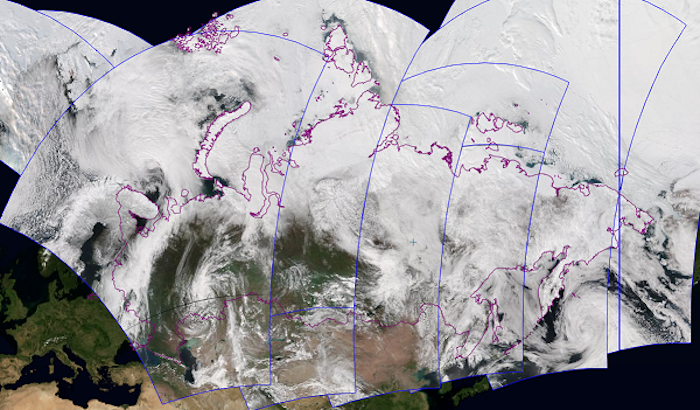
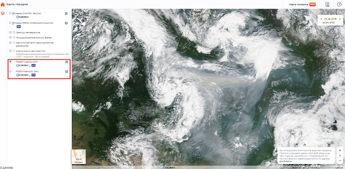
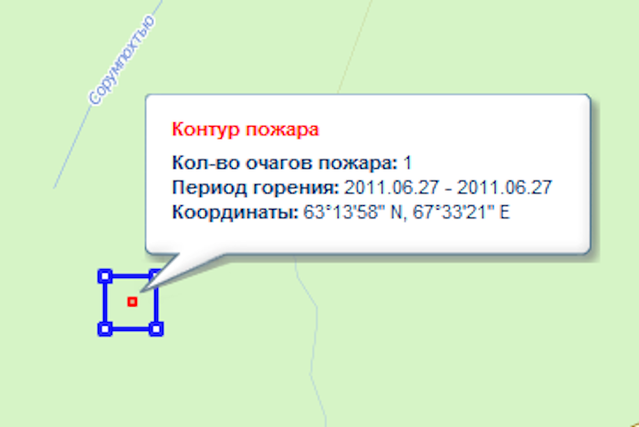
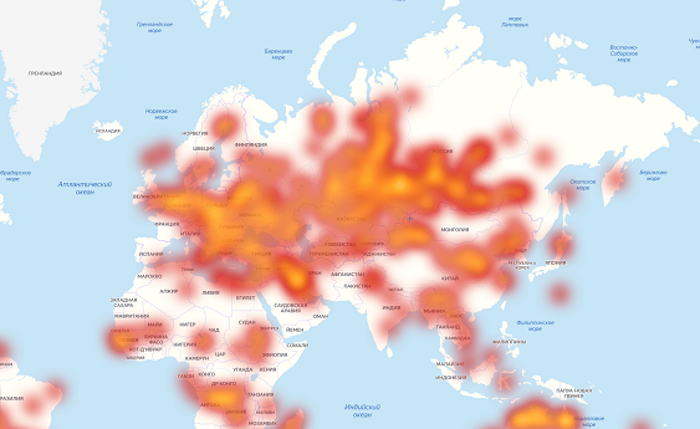
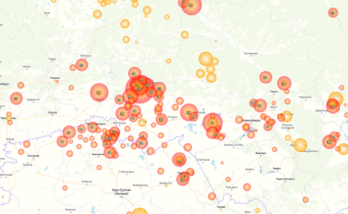
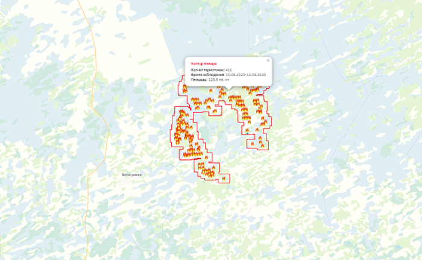
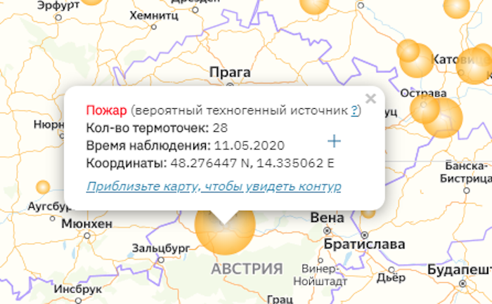
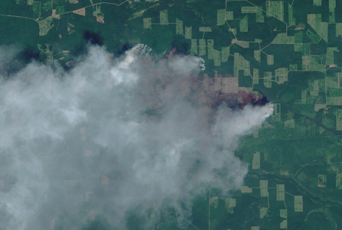

Система оперативного мониторинга СКАНЭКС, сервис «Карта пожаров»
Система оперативного мониторинга природных пожаров разработана российской компанией «СКАНЭКС» и базируется на технологиях анализа спутниковой информации.Главная цель сервиса - предоставление результатов мониторинга пожаров всем заинтересованным пользователям. Проект ориентирован как на обычную интернет-аудиторию, так и на специалистов.
В качестве базовой компоненты сервиса используется технология, основанная на алгоритме автоматического детектирования пожаров по «тепловым» каналам космической съемки с аппаратов дистанционного зондирования Земли. Область мониторинга включает в себя всю Россию и сопредельные территории, где обеспечивается оперативный прием спутниковых данных, необходимых для детектирования пожаров. Глобальное покрытие основывается на данных системы NASA FIRMS. Информация о пожарах публикуется на интерактивной карте с предоставлением необходимых инструментов просмотра и навигации.
Стартовая страница сервиса «Карта пожаров» представляет собой открытый ресурс для широкой аудитории, где на интерактивной карте по умолчанию отображается информация о выявленных очагах пожаров за период последние 24 часа + текущие сутки (+ XX часов UTC). С помощью встроенного календаря можно посмотреть пожарную ситуацию за несколько прошедших суток.
Обращаем внимание, что открытая часть сервиса, расположенная по адресу fires.ru, является бесплатной для использования. Поэтому просим указывать адрес веб-страницы при ссылках на источник.
Детектирование пожаров по спутниковым изображениям
Сведения о пожарах, предоставляемые сервисом, являются продуктом автоматизированной тематической классификации данных дистанционного зондирования Земли – космических снимков, поступающих со спутников Terra, Aqua, NPP, NOAA-20.Период и время обновления данных зависит от пролета спутника над данной конкретной территорией. В среднем периодичность составляет 2-4 раза в сутки: орбиты спутников построены таким образом, что каждый из них оказывается над одной и той же территорией дважды в сутки (один дневной пролет и один ночной). Периодичность мониторинга конкретной территории зависит от размеров и географического положения по широте. Ближе к северным широтам периодичность возрастает за счет наложения пролетов, что представлено на иллюстрации дневного покрытия съемкой Terra MODIS территории России.

Программа NASA по спутниковому мониторингу Земли (Earth Observation System) позволяет свободно использовать данные космической съемки с аппаратов Terra, Aqua, NPP, NOAA-20. ГК «СКАНЭКС» ведет прямой прием этих данных на станции в приемных центрах в Москве, Мегионе, Иркутске и Магадане.
Принятые данные поступают в автоматическую цепочку обработки и подготовки продуктов, которая включает стадию первичной обработки данных, создание на основе базовых продуктов космической съемки тематических продуктов высокого уровня (маски ледового и снежного покровов, маска облачности, температура поверхности, пожары и тепловые аномалии и др.), подготовку продуктов для интернет-доступа и публикацию в виде сервиса. На карте пожаров информация с указанных спутников используется для детектирования вероятных очагов пожаров и для подготовки ежедневного обзорного покрытия космическими снимками. Подобная система производства продуктов спутникового мониторинга используется во многих других сервисах «СКАНЭКС».
Алгоритмы детектирования пожаров в автоматическом режиме основаны на сильном излучении в инфракрасном диапазоне (контекстно-пороговый алгоритм). Разница в температурных яркостях пикселей отражает разницу между температурой очагов пожара и земной поверхности, а информация, поступающая с других спектральных каналов, помогает маскировать облака. Кроме того, с помощью пороговых значений производится фильтрация термальных аномалий, маловероятно относящихся к пожарам. Таким образом выходным продуктом работы алгоритма является маска пикселей, классифицированных как "термоточки" (hotspots) пожаров и их яркостные характеристики.
Вероятность обнаружения пожаров
Данные мониторинга пожаров являются контекстной оценкой, на степень точности которой влияют многие факторы. Термоточки пожаров с высокой степенью вероятности детектируются при безоблачной или малооблачной погоде. Кроме того, на вероятность обнаружения пожара влияют такие факторы как разностная температура и размер пожара.Для оценки состояния облачности в момент проводимых наблюдений за пожарами можно использовать архивные слои космических изображений. В открытой части сервиса – это покрытие с аппаратов Terra, Aqua MODIS, в коммерческой версии сервиса – дополнительно снимки NOAA-20, Suomi NPP, Landsat-8, Sentinel-2.

Очаги пожаров детектируется по инфракрасным каналам, линейное разрешение которых составляет 1 км/пиксел. Это означает, что каждый обнаруженный очаг отображается как точка в центре пикселя 1 км x 1 км. В действительности очаг может быть локализован где-то внутри данной области и реальная площадь пожара может быть меньше.

Несмотря на то, что площадь пикселя в инфракрасном канале составляет 1 кв. км, в среднем алгоритм детектирования пожаров определяет открытые очаги и тлеющие пожары на площади от 1/10 гектара. В реальности минимальная площадь детектируемого пожара зависит от целого ряда характеристик в момент конкретной съемки (облачность, освещенность, угол съемки, тип растительности, температура поверхности и т.п.). Более яркие открытые очаги с большей температурой горения могут быть зарегистрированы на меньшей площади возгорания. Характерный пример - газовые факелы в районах добычи нефти и природного газа или трубы заводов, которые при этом являются ложными сигналами с точки зрения задачи детектирования пожаров.
Кластеры пожаров
Кластеры - это группа из отдельных термоточек пожаров. Объединение в группу проводится на основе автоматического алгоритма и не гарантирует стопроцентную точность. Кластеризация помогает:• визуализировать большое количество термоточек и улучшить читаемость информации на обзорных масштабах
• отследить динамику развития пожаров
• приблизительно оценить силу пожара – область, где кластеризуется больше термоточек, является признаком более мощного пожара
• приблизительно оценить площадь активного пожара по суммарному контуру термоточек, вошедших в кластер
• приблизительно оценить суммарную площадь выгоревшей территории за выбранный период наблюдений
• на мелких масштабах карты (уровни 1-3) кластеры пожаров визуализируются в виде динамической "тепловой карты", что позволяет быстрее просматривать и анализировать большой объем данных
  
Кластеры пожаров также помогают визуально отфильтровать «ложные пожары», которые появляются, например, из-за бликов, и кратковременные пожары, которые обусловлены, например, палами сухой травы и пока не представляют реальной угрозы. Две группы термоточек, которые несколько дней назад были одним пожаром, и затем разделились, все равно будут являться частью одного кластера за весь суммарный период горения, даже если за часть периода отображаются разными контурами. Интуитивно кластеры можно считать соотносящимися с выгоревшими территориями. При этом все отдельные термоточки, вошедшие и не вошедшие в кластеры, показываются на карте, начиная с 11 уровня зума.
Техногенные источники тепла
Значительная часть термоточек пожаров, выявленных по спутниковым данным, может относиться к так называемым техногенным источникам тепла. Это в первую очередь промышленные объекты, например, заводские трубы или факелы сжигания попутного газа. Чтобы не вызывать путаницы в восприятии информации о пожарах, в сервисе используется специальный алгоритм дополнительной фильтрации техногенных источников.Поскольку техногенные объекты характеризуются скоплением термоточек в одной локальной области и имеют высокую повторяемость горения, то на основе постоянного выявления таких областей мы составляем базу данных техногенных объектов, которую дополнительно пополняем информацией из открытых источников о расположении крупных промышленных предприятий и месторождений. Если выявленный очаг пожара попадает в такую область техногенного источника, то ему присваивается соответствующий статус. Кластеры и точки техногенных аномалий имеют особое условное обозначение на карте.

Верификация данных о пожарах
Данные автоматического детектирования пожаров носят вероятностный и выборочный характер. Поэтому для получения более точного и полного результата необходимо использовать инструменты верификации, основанные на дополнительных источниках информации: информация от пользователей, изображения с видеокамер, автоматическая или ручная обработка данных со спутников высокого разрешения и др.Основным источником проверки служат оперативные спутниковые снимки высокого разрешения, на которых можно в деталях увидеть всю площадь пожара. Кроме того, малоразмерные очаги пожаров и низкотемпературные очаги, характеризующиеся слабой интенсивностью теплового излучения (такие как торфяные пожары) могут быть обнаружены в инфракрасном диапазоне сканерами более высокого разрешения. Такие данные распространяются на коммерческой основе ГК «СКАНЭКС», но результаты верификации, полученные с их использованием, постоянно улучшают точность алгоритмов детектирования и общее качество сервиса.

Карта пожаров PRO
Базовая версия сервиса, доступная по адресу fires.ru, является бесплатной для использования, но имеет ограниченный функционал. Полная версия сервиса называется «Карта пожаров PRO» и доступна по системе подписок.Сервис «Карта пожаров PRO» представляет собой продвинутую версию для организаций с расширенной поддержкой и возможностями. Расширенный функционал включает:
• обновление данных о пожарах более 4 раз в сутки
• доступ к оперативным космическим снимкам MODIS, NPP, NOAA-20, на которых глобально показаны районы возгорания
• доступ к детальным космическим снимкам Landsat-8, Sentinel-2 на участки пожаров
• доступ к данным и картам прогноза погоды
• доступ к сводной пожарной статистике по регионам России
• возможность выгрузить данные о термоточках и контурах пожаров
• доступ к инструментам создания и загрузки пользовательских пространственных данных
• API для подключения данных во внешние системы и веб-сайты
• E-mail и СМС уведомления о новых пожарах
Подробнее о доступе к сервису «Карта пожаров PRO» читайте на странице pro.fires.ru